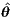
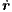
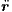
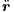

In this question we are going to be converting between Cartesian and polar coordinates. Moreover, we will be using the
transformation relationships to take time derivatives of the polar coordinates. Critically, we will be using symbols, r, r and . This
may seem confusing (because it is), however, these are standard names for the variables we are going to consider.
Thus, my advice to you is to be careful over which variable you mean. Note that, although this question seems
long, it is split up into a number of small chunks to help you through, thus, each question only requires a small
answer.
Consider Figure 1, where we see a point (x,y), which is a distance r away from the origin along an angle θ away from the
horizontal. Equally, define i and j to be the standard normalised Cartesian vectors,
(1)
respectively. Further, let and be the normalised polar coordinates along the radial and angular directions as shown.
Figure 1: Cartesian and polar coordinates.
1.
From Figure 1 we can derive that relationship that
(2)
What is the equivalent relationship for .
2.
Rewrite the general coordinate vector
(3)
in terms r, θ, cos and sin.
3.
Using questions 1 and 2 show that we can rewrite the coordinate vector r as
Use question 6 again to take a second derivative of the position vector to show that
(7)
9.
Assume now that the position is evolving due to an applied force, F, but there is no component of force along the 
direction, i.e. F = F . Use Newton’s Second Law of Motion to show that
(8)
where m is the mass of the object the force is acting on and
(9)
Having finished question 9 you will have proven Kepler’s Second Law of Planetary Motion. Namely, if we consider a planet
orbiting a sun then a line segment joining the centres of the planet and the Sun sweeps out equal areas during equal
intervals of time. This comes from the above result because the force acting on an orbiting planet will be gravitation,
which acts along a line connecting the centres of the planets, i.e. there is no angular component to the force. Thus,
equation (9) holds and r2 has the interpretation of being the area swept out by the line connecting the two bodies,
which is derived to be constant.
Figure 2: Illustrating Kepler’s Second Law of Planetary motion. Suppose A1 and A2 are areas swept out by the line
connecting the red planet to the yellow sun in the same amount of time. Then equation (9) proves A1= A2.
2 Two body problem
Consider two planets with the same mass, m, and positions r1(t) and r2(t), respectively. Let the initial positions be r1(0) = r10
and r2(0) = r20 and let the initial velocities be 1(0) = v10 and 2(0) = v20.
(a)
(b)
Figure 3: (a) Positions and forces in the two body problem. The position (r1+ r2)∕2 is the centre of mass of the two
body system. (b) Redefining the system so that planet 1 is the origin.
1.
Using Newton’s Law of Gravitation what are the forces F12 and F21.
2.
Using Newton’s Second Law of Motion, write down two governing equations for the positions of the two planets in terms of
the forces derived in part 1 and the accelerations,  1 and  2. Deduce that
(10)
By proving this result and considering Figure 3(a) we see that the the centre of mass of the two-body system
exhibits no acceleration. Thus, as the two planets orbit each other they can travel through space, but their
movement must be consistent with the fact that their centre of mass is stationary, or moving at a constant speed.
3 Two body problem continued
Instead of considering the two positions separately, we redefine the origin to be planet 1 and consider the motion of planet 2
relative to planet 1 (see Figure 3(b)). Thus, we let R = r2-r1 be the new position vector, where R = |r2- r1| is the distance
between the two planets and the position vector makes an angle Θ against the positive horizontal. From this define and to be
the new unit vectors in the radial and angular directions. By Newton’s Second Law of Motion (see question 1) the equation
governing the system is
Repeating this procedure rewrite the second time derivative of R in terms of u and Θ. Use all of these derivations to show
that
(16)
4.
Rewrite the initial conditions R = C2, Ṙ= 0 and Θ = 0 at time t = 0 in terms of u equation (16) and solve equation (16).
Show that the final solution to the original problem is
(17)
4 Computer simulation or plot by hand
Plot the curve
(18)
over the range 0 ≤ Θ ≤ 2π for multiple values of α. Plot the curve in both the (Θ,R(θ)) plane as well as in polar coordinates, i.e.(R(Θ)cos(Θ),R(Θ)sin(Θ)).
1.
What happens when:
(a)
α is really big?
(b)
α = 1?
(c)
α ≤?
2.
Even if you have not got plotting software, you can still sketch the equations by hand. Which case matches which picture in
Figure 4?
3.
What do these cases mean in terms of the planet’s mass and the resulting motion?
Use the second equation, above, to eliminate from the first equation.
2.
Multiply the resulting equation by Ṙ. Show that the equation can be rewritten in the following form
(20)
3.
Integrate over time noting that initially R(0) = R0 and Ṙ(0) = 0. Show that you can derive
(21)
4.
Suppose a solution, R(t), exists for all time, then we know that the term within the square root must be positive for all time.
Letting a = 2Gm∕C2 show that this means that if a solution exists then
(22)
5.
Consider the quadratic equation (22) and split the analysis into two cases.
(a)
Suppose R0a < 1, show that in this case if a solution, R(t), exists for all time then R > R0.
(b)
Suppose R0a > 1, show that in this case if a solution, R(t), exists for all time then
(23)
and
(24)
7 More Law of Mass Action
1.
Write the following interaction equations as ODEs.
(a)
u2u.
(b)
u + vv, u + vu, u + v.
2.
Write the following ODEs as interaction equations.
 . This
may seem confusing (because it is), however, these are standard names for the variables we are going to consider.
Thus, my advice to you is to be careful over which variable you mean. Note that, although this question seems
long, it is split up into a number of small chunks to help you through, thus, each question only requires a small
answer.
. This
may seem confusing (because it is), however, these are standard names for the variables we are going to consider.
Thus, my advice to you is to be careful over which variable you mean. Note that, although this question seems
long, it is split up into a number of small chunks to help you through, thus, each question only requires a small
answer.

 .
.